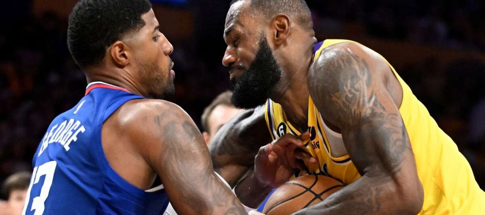

Noticias Cidade
Esportes
Data: 25/10/2022.
Por: Renato Campos.
Em noite de susto com Anthony Davis, Lakers luta muito mas perde para Clippers.

"George(13) dividindo com LeBron(6).
Por um bom período de tempo na partida desta quinta, o Lakers parecia que podia surpreender o Clippers em Los Angeles. Mas assim como na partida contra o Warriors na sua estreia da temporada da NBA, o time foi derrotado por 103-97 e tem agora uma campanha de 0-2.
O time começou a partida quente com duas bolas de três pontos e nos fazendo crer que poderia ser uma noite diferente. Patrick Beverley esteve focado em sua defesa desde o início e com um toco em Paul George, parecia que a noite seria do Lakers.
Logo após o início promissor, o choque de realidade. Embora empenhado, o Lakers terminou o primeiro período com aproveitamento de apenas 3-13 nas bolas de três pontos. Apesar da boa atuação de LeBron e Davis, que jogaram nove minutos durante o período, o Lakers perdia por 35-23.
O segundo período foi talvez um dos momentos mais emocionantes do jogo, com as duas equipes aplicando sequências e mantendo o placar parelho. O Clippers deu o primeiro passo com uma série de 11-0 e ainda teve a ajuda de Kawhi Leonard depois disso. Quando o jogo parecia que estava começando a desandar, com o Lakers perdendo por 16 pontos, o time reagiu e aplicou uma incrível sequência de 20-4 para ir pro vestiário com o jogo empatado em 56.
Com menos de 10 minutos para o final da partida, o placar de 89-87 para o Lakers ainda deixava o duelo em aberto. A vantagem veio com um grande empenho defensivo de Beverley e com boas jogadas de transição.
Ainda que o Lakers tenha lutado bastante, o esforço acabou não sendo suficiente para a produção de Kawhi Leonard, Paul George e Luke Kennard, que garantiram a vitória do Clippers.